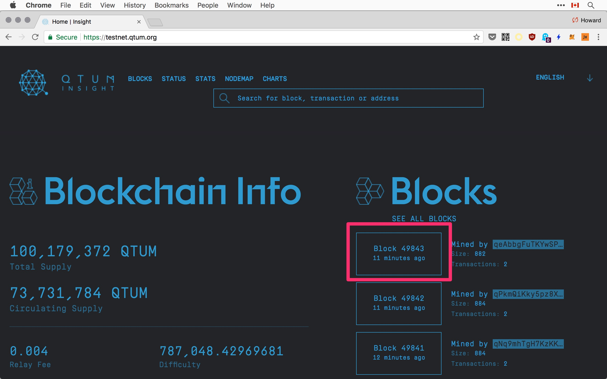

Test & Main Networks
The regtest mode is convenient for local development, but it comes a time when you want to test your smart contracts and DApp on the real network.
Connecting To The Testnet
The docker container connects to different networks depending on which QTUM_NETWORK is specified. By default, regtest is used. To connect to the test network, use testnet:
docker run -it --rm \
--name myapp \
-e "QTUM_NETWORK=testnet" \
-v `pwd`:/dapp \
-p 9899:9899 \
-p 9888:9888 \
-p 3889:3889 \
-p 13888:13888 \
hayeah/qtumportal-p 13888:13888is the p2p port for the testnet, so other nodes can connect to you.
It takes some time to download the blockchain data from the network. You'll see log messages like this stream by:
06:41:56 qtumd | 2017-12-14 06:41:56 UpdateTip: new best=000054cbb176ed62b2f6fc335204bee4b7ce5f658b8f7cfff6961c25c9a54cf9 height=2094 version=0x20000003 log2_work=27.032757 tx=2095 date='2017-09-08 05:50:54' progress=0.000638 cache=0.4MiB(2094txo)
06:41:56 qtumd | 2017-12-14 06:41:56 ProcessNetBlock: ACCEPTED
06:41:56 qtumd | 2017-12-14 06:41:56 UpdateTip: new best=0000924e3af343bd41f0476b92aeef4e46d748db436d5a5074f337989b7ffba7 height=2095 version=0x20000003 log2_work=27.033445 tx=2096 date='2017-09-08 05:50:54' progress=0.000638 cache=0.4MiB(2095txo)
06:41:56 qtumd | 2017-12-14 06:41:56 ProcessNetBlock: ACCEPTED
06:41:56 qtumd | 2017-12-14 06:41:56 UpdateTip: new best=0000bf6616615286a786f0ec59c3881f48e1b1a49367779f33753a027b099c31 height=2096 version=0x20000003 log2_work=27.034133 tx=2097 date='2017-09-08 05:50:54' progress=0.000638 cache=0.4MiB(2096txo)
06:41:56 qtumd | 2017-12-14 06:41:56 ProcessNetBlock: ACCEPTED
// synchronizing with network...progressapproaches 1.0 (100%) as your local node catch up to the network.heightthe latest block that had been synced.
Visit the Testnet Block Explorer to see some stats about the test network. In particular, it lists the latest blocks mined, so you can get a rough idea of how far along you are in the synchronization process:

As of Mid-December 2017, the block height is about 50,000ish.
Getting Testnet Tokens
For the testnet you are not allowed to generate or mine new blocks to get tokens. Rather, you can request some free tokens from the testnet faucet:
http://testnet-faucet.qtum.info
First generate a new payment address:
qcli getnewaddress
qcf3Yv72SbLvVDmU99BMf5T1YwvdvA3fx6Then copy it into the input box:

http://testnet-faucet.qtum.info
Once accepted, you should see your address and amount in the list of latest payouts:

Clicking on the pay out address, you'd see a link to view the transaction in the testnet block explorer:

https://testnet.qtum.org/address/qcf3Yv72SbLvVDmU99BMf5T1YwvdvA3fx6
Tapping ctrl-r madly to refresh the browsers again and again, because it'll help the network to confirm the transaction faster. Once it's confirmed, you can check your balance locally:
qcli getbalance
94.00000000You can also see the UTXOs created for that amount:
qcli listunspent
[
{
"txid": "2a8997d398633bc01c97fc623a59aaca4f678caf2d3949f4679e1f0f5952479f",
"vout": 0,
"address": "qcf3Yv72SbLvVDmU99BMf5T1YwvdvA3fx6",
"account": "",
"scriptPubKey": "76a914d17c851679a8ca558d9d783643cc926f7a382e7888ac",
"amount": 94.00000000,
"confirmations": 23,
"spendable": true,
"solvable": true
}
]But sorry, there's no http://faucet.qtum.info : p
Main Network
To connect to the mainnet, set QTUM_NETWORK=mainnet:
docker run -it --rm \
--name myapp \
-e "QTUM_NETWORK=mainnet" \
-v `pwd`:/dapp \
hayeah/qtumportalNote that we've omitted the -p flags, so the network ports are not accessible outside the container.
It's safer to do your things by shelling into the container:
docker exec -it myapp sh